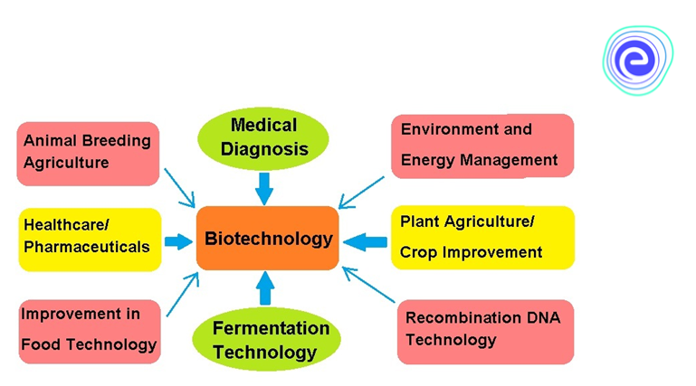

Biotechnology
Biotechnology is the use of biology to develop new products, methods and organisms
intended to improve human health and society. Biotechnology, often referred to as biotech, has existed
since the beginning of civilization with the domestication of plants, animals and the discovery of
fermentation.
History of Biotechnology
Biotechnology began at least 6,000 years ago with the agricultural revolution.
This early era was characterized by exploiting living organisms in their natural forms or modifying
their genetic makeup through selective breeding.Over the last 100 hundred years or so, biotechnology
emerged with the following discoveries and advancements:
- 1919. Hungarian scientist Karl Ereky coins the term biotechnology.
- 1928. Alexander Fleming discovers penicillin, the first true antibiotic.
- 1943. Oswald Avery proves DNA carries genetic information.
- 1953. James Watson and Francis Crick discover the double helix structure of DNA.
- 1960s. Insulin is synthesized to fight diabetes, and vaccines for measles, mumps and rubella are developed.
- 1969. The first synthesis of an enzyme in vitro, or outside the body, is conducted.
- 1973. Herbert Boyer and Stanley Cohen develop genetic engineering with the first insertion of DNA from one bacteria into another.
- 1980s. The first biotech drugs to treat cancer are developed.
- 1890. The United States Supreme Court rules that a "live human-made microorganism is patentable subject matter," meaning GMOs can be intellectual property.
- 1982. A biotech-developed form of insulin becomes the first genetically engineered product approved by the U.S. Food and Drug Administration (FDA).
- 1983. The first genetically modified plant is introduced.
- 1993. GMOs are introduced into agriculture with the FDA approval of growth hormones that produce more milk in cows.
- 1997. The first mammal is cloned.
- 1998. The first draft of the Human Genome Project is created, giving scientists access to over 30,000 human genes and facilitating research on treatment of diseases such as cancer and Alzheimer's.
- 2010. The first synthetic cell is created.
- 2013. The first bionic eye is created.
- 2020. MRNA vaccine and monoclonal antibody technology is used to treat the SARS-CoV-2 virus.
Applications of Biotechnology
The use and commercialization of modern biotechnology often fall into four main fields: environment, medicine, industry and agriculture.
